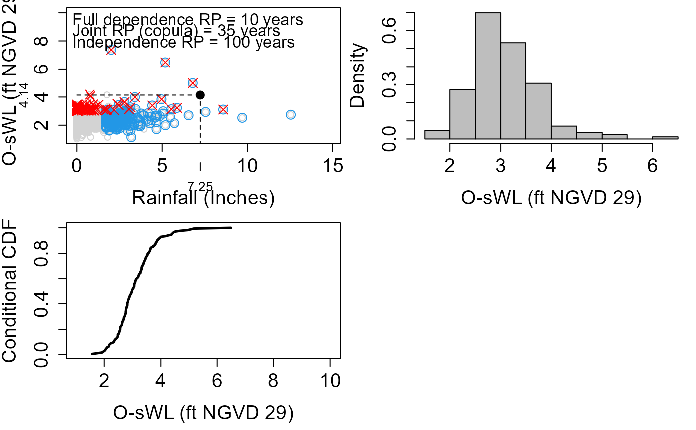

Conditional_RP_2D_Equal.RdA large number of realizations are simulated from the copulas fit to the conditioned samples, in proportion with the sizes of the conditional samples. The realization are transformed to the original scale and the relevant probabilities estimated empirically. The conditional probabilities return period of the conditioning variable equals
Conditional_RP_2D_Equal(
Data,
Data_Con1,
Data_Con2,
u1,
u2,
Thres1 = NA,
Thres2 = NA,
Copula_Family1,
Copula_Family2,
Marginal_Dist1,
Marginal_Dist2,
Con1 = "Rainfall",
Con2 = "OsWL",
mu = 365.25,
Con_Var,
RP_Con,
RP_Non_Con,
Width = 0.1,
x_lab = "Rainfall (mm)",
y_lab = "O-sWL (mNGVD 29)",
x_lim_min = NA,
x_lim_max = NA,
y_lim_min = NA,
y_lim_max = NA,
DecP = 2,
N
)Data frame of dimension nx2 containing two co-occurring time series of length n.
Data frame containing the conditional sample (declustered excesses paired with concurrent values of other variable), conditioned on the variable in the first column.
Data frame containing the conditional sample (declustered excesses paired with concurrent values of other variable), conditioned on the variable in the second column. Can be obtained using the Con_Sampling_2D function.
Numeric vector of length one specifying the (quantile) threshold above which the variable in the first column was sampled in Data_Con1.
Numeric vector of length one specifying the (quantile) threshold above which the variable in the second column was sampled in Data_Con2.
Numeric vector of length one specifying the threshold above which the variable in the first column was sampled in Data_Con1. Only one of u1 and Thres1 should be supplied. Default is NA.
Numeric vector of length one specifying the threshold above which the variable in the second column was sampled in Data_Con2. Only one of u2 and Thres2 should be supplied. Default is NA.
Numeric vector of length one specifying the copula family used to model the Data_Con1 dataset.
Numeric vector of length one specifying the copula family used to model the Data_Con2 dataset. Best fitting of 40 copulas can be found using the Copula_Threshold_2D function.
Character vector of length one specifying (non-extreme) distribution used to model the marginal distribution of the non-conditioned variable in Data_Con1.
Character vector of length one specifying (non-extreme) distribution used to model the marginal distribution of the non-conditioned variable in Data_Con2.
Character vector of length one specifying the name of variable in the first column of Data.
Character vector of length one specifying the name of variable in the second column of Data.
Numeric vector of length one specifying the (average) occurrence frequency of events in Data. Default is 365.25, daily data.
Character vector of length one specifying the (column) name of the conditioning variable.
Numeric vector of length one specifying the return period of the conditioning variable Con_Var.
Numeric vector of length one specifying the return period of the non-conditioning variable.
Numeric vector of length one specifying the distance above and below the RP_Con event of Con_Var the simulated events are used to estimate the conditional probability.
Character vector specifying the x-axis label.
Character vector specifying the y-axis label.
Numeric vector of length one specifying x-axis minimum. Default is NA.
Numeric vector of length one specifying x-axis maximum. Default is NA.
Numeric vector of length one specifying y-axis minimum. Default is NA.
Numeric vector of length one specifying y-axis maximum. Default is NA.
Numeric vector of length one specifying the number of decimal places to round the data in the conditional samples to in order to identify observations in both conditional samples. Default is 2.
Numeric vector of length one specifying the size of the sample from the fitted joint distributions used to estimate the density along an isoline. Samples are collected from the two joint distribution with proportions consistent with the total number of extreme events conditioned on each variable. Default is 10^6
Console output:
Con_Var Name of the conditioning variable
RP_Var1
Return period of variable Con1 i.e., variable in second column of Data
RP_Var2
Return period of variable Con2 i.e., variable in third column of Data
Var1 Value of Con1 at the return period of interest
Var2 Value of Con2 at the return period of interest
RP_Full_Dependence Joint return period of the (Var1,Var2) event under full dependence
RP_Independence Joint return period of the (Var1,Var2) event under independence
RP_Copula Joint return period of the (Var1,Var2) event according to the two sided conditional sampling - copula theory approach
Prob
Probability associated with RP_Copula
N_Sub_Sample
Number of realizations of the Con_Var within +/- width of the value of Con_Var with return period .
Non_Con_Var_X Values of the non-conditioned variable of the (conditional) Cummulative Distribution Function (CDF) i.e. x-axis of bottom left plot
Con_Prob
Con_Prob CDF of the non-conditioned variable given the return period of Con_Var equals RP_Con
Con_Prob_Est
Probability the non-conditioned variable is less than or equal to RP_Non_Con given the return period of Con_Var equals RP_Con
Graphical output:
Top Left: Sample conditioned on rainfall (red crosses) and O-sWL (blue circles). Black dot is the event with a marginal return period of the conditioned variable Var_Con and non-conditioned variable equal to RP_Con and RP_Non_Con, respectively. The joint return period of the event using the conditional sampling - copula theory approach and under the assumptions of full dependence and independence between the variables are printed.
Top Right: Sample used to estimate the joint return period of the event of interest. Black dots denote the N_Excess sized subset of the sample where the marginal return period of the conditioned variable Var_Con exceeds RP_Con (years). The subset is used to estimate the conditional probabilities in part two of the question.
Bottom Left: Conditional Cumulative Distribution Function (CDF) of the non-conditioned variable given the marginal return period of the conditioned variable Var_Con exceeds RP_Con years i.e. the black dots in the top right plot.
Bottom Right: Conditional return period of the non-conditioned variable given the conditioned variable Var_Con has a return period longer than RP_Con.
#Under a 10yr rainfall event condition, what is the joint probability that a 10yr surge (O-sWL)
#event occurs simultaneously? What is the cumulative probability of events with the frequency
#equal to or less than a 10yr surge event?
#' #Conditional samples
con.sample.Rainfall<-Con_Sampling_2D(Data_Detrend=S22.Detrend.df[,-c(1,4)],
Data_Declust=S22.Detrend.Declustered.df[,-c(1,4)],
Con_Variable="Rainfall",u=0.98)
con.sample.OsWL<-Con_Sampling_2D(Data_Detrend=S22.Detrend.df[,-c(1,4)],
Data_Declust=S22.Detrend.Declustered.df[,-c(1,4)],
Con_Variable="OsWL",u=0.98)
#Add some noise to rainfall to aid distribution fitting in Conditional_RP_2D function
con.sample.OsWL$Data$Rainfall<-con.sample.OsWL$Data$Rainfall+
runif(length(con.sample.OsWL$Data$Rainfall),0.001,0.01)
#Find the best fitting copula
cop.Rainfall <- Copula_Threshold_2D(Data_Detrend=S22.Detrend.df[,-c(1,4)],
Data_Declust=S22.Detrend.Declustered.df[,-c(1,4)],
u1=0.98, u2=NA, PLOT=FALSE)$Copula_Family_Var1
cop.OsWL<- Copula_Threshold_2D(Data_Detrend=S22.Detrend.df[,-c(1,4)],
Data_Declust=S22.Detrend.Declustered.df[,-c(1,4)],
u1=NA, u2=0.98, PLOT=FALSE)$Copula_Family_Var2
#Calculate conditional probabilities
Conditional_RP_2D_Equal(Data=S22.Detrend.df,
Data_Con1=con.sample.Rainfall$Data, Data_Con2=con.sample.OsWL$Data,
u1=0.98, u2=0.98,
Copula_Family1=cop.Rainfall,Copula_Family2=cop.OsWL,
Marginal_Dist1="Logis", Marginal_Dist2="Twe",
Con1 = "Rainfall", Con2 = "OsWL",
mu = 365.25,
Con_Var="Rainfall",
RP_Con=10, RP_Non_Con=10,
x_lab = "Rainfall (Inches)", y_lab = "O-sWL (ft NGVD 29)",
y_lim_max = 10,
N=10^5)
#> Warning: NaNs produced
#> Warning: NaNs produced
#> Warning: non-list contrasts argument ignored
#> 1.5 1.7 1.9 2.1 2.3 2.5
#> ......Done.
#> $Con_Var
#> [1] "Rainfall"
#>
#> $RP_Var1
#> [1] 10
#>
#> $RP_Var2
#> [1] 10
#>
#> $Var1
#> [1] 7.248577
#>
#> $Var2
#> [1] 4.139639
#>
#> $RP_Full_Dependence
#> [1] 10
#>
#> $RP_Independence
#> [1] 100
#>
#> $RP_Copula
#> [1] 35.22067
#>
#> $Prob
#> [1] 0.02839242
#>
#> $N_Sub_Sample
#> [1] 169
#>
#> $Non_Con_Var_X
#> [1] 1.57 1.58 1.59 1.60 1.61 1.62 1.63 1.64 1.65 1.66 1.67 1.68 1.69 1.70 1.71
#> [16] 1.72 1.73 1.74 1.75 1.76 1.77 1.78 1.79 1.80 1.81 1.82 1.83 1.84 1.85 1.86
#> [31] 1.87 1.88 1.89 1.90 1.91 1.92 1.93 1.94 1.95 1.96 1.97 1.98 1.99 2.00 2.01
#> [46] 2.02 2.03 2.04 2.05 2.06 2.07 2.08 2.09 2.10 2.11 2.12 2.13 2.14 2.15 2.16
#> [61] 2.17 2.18 2.19 2.20 2.21 2.22 2.23 2.24 2.25 2.26 2.27 2.28 2.29 2.30 2.31
#> [76] 2.32 2.33 2.34 2.35 2.36 2.37 2.38 2.39 2.40 2.41 2.42 2.43 2.44 2.45 2.46
#> [91] 2.47 2.48 2.49 2.50 2.51 2.52 2.53 2.54 2.55 2.56 2.57 2.58 2.59 2.60 2.61
#> [106] 2.62 2.63 2.64 2.65 2.66 2.67 2.68 2.69 2.70 2.71 2.72 2.73 2.74 2.75 2.76
#> [121] 2.77 2.78 2.79 2.80 2.81 2.82 2.83 2.84 2.85 2.86 2.87 2.88 2.89 2.90 2.91
#> [136] 2.92 2.93 2.94 2.95 2.96 2.97 2.98 2.99 3.00 3.01 3.02 3.03 3.04 3.05 3.06
#> [151] 3.07 3.08 3.09 3.10 3.11 3.12 3.13 3.14 3.15 3.16 3.17 3.18 3.19 3.20 3.21
#> [166] 3.22 3.23 3.24 3.25 3.26 3.27 3.28 3.29 3.30 3.31 3.32 3.33 3.34 3.35 3.36
#> [181] 3.37 3.38 3.39 3.40 3.41 3.42 3.43 3.44 3.45 3.46 3.47 3.48 3.49 3.50 3.51
#> [196] 3.52 3.53 3.54 3.55 3.56 3.57 3.58 3.59 3.60 3.61 3.62 3.63 3.64 3.65 3.66
#> [211] 3.67 3.68 3.69 3.70 3.71 3.72 3.73 3.74 3.75 3.76 3.77 3.78 3.79 3.80 3.81
#> [226] 3.82 3.83 3.84 3.85 3.86 3.87 3.88 3.89 3.90 3.91 3.92 3.93 3.94 3.95 3.96
#> [241] 3.97 3.98 3.99 4.00 4.01 4.02 4.03 4.04 4.05 4.06 4.07 4.08 4.09 4.10 4.11
#> [256] 4.12 4.13 4.14 4.15 4.16 4.17 4.18 4.19 4.20 4.21 4.22 4.23 4.24 4.25 4.26
#> [271] 4.27 4.28 4.29 4.30 4.31 4.32 4.33 4.34 4.35 4.36 4.37 4.38 4.39 4.40 4.41
#> [286] 4.42 4.43 4.44 4.45 4.46 4.47 4.48 4.49 4.50 4.51 4.52 4.53 4.54 4.55 4.56
#> [301] 4.57 4.58 4.59 4.60 4.61 4.62 4.63 4.64 4.65 4.66 4.67 4.68 4.69 4.70 4.71
#> [316] 4.72 4.73 4.74 4.75 4.76 4.77 4.78 4.79 4.80 4.81 4.82 4.83 4.84 4.85 4.86
#> [331] 4.87 4.88 4.89 4.90 4.91 4.92 4.93 4.94 4.95 4.96 4.97 4.98 4.99 5.00 5.01
#> [346] 5.02 5.03 5.04 5.05 5.06 5.07 5.08 5.09 5.10 5.11 5.12 5.13 5.14 5.15 5.16
#> [361] 5.17 5.18 5.19 5.20 5.21 5.22 5.23 5.24 5.25 5.26 5.27 5.28 5.29 5.30 5.31
#> [376] 5.32 5.33 5.34 5.35 5.36 5.37 5.38 5.39 5.40 5.41 5.42 5.43 5.44 5.45 5.46
#> [391] 5.47 5.48 5.49 5.50 5.51 5.52 5.53 5.54 5.55 5.56 5.57 5.58 5.59 5.60 5.61
#> [406] 5.62 5.63 5.64 5.65 5.66 5.67 5.68 5.69 5.70 5.71 5.72 5.73 5.74 5.75 5.76
#> [421] 5.77 5.78 5.79 5.80 5.81 5.82 5.83 5.84 5.85 5.86 5.87 5.88 5.89 5.90 5.91
#> [436] 5.92 5.93 5.94 5.95 5.96 5.97 5.98 5.99 6.00 6.01 6.02 6.03 6.04 6.05 6.06
#> [451] 6.07 6.08 6.09 6.10 6.11 6.12 6.13 6.14 6.15 6.16 6.17 6.18 6.19 6.20 6.21
#> [466] 6.22 6.23 6.24 6.25 6.26 6.27 6.28 6.29 6.30 6.31 6.32 6.33 6.34 6.35 6.36
#> [481] 6.37 6.38 6.39 6.40 6.41 6.42 6.43 6.44 6.45 6.46 6.47 6.48 6.49
#>
#> $Con_Prob
#> [1] NA 0.006215124 0.006533218 0.006851312 0.007169406 0.007487500
#> [7] 0.007805594 0.008123688 0.008441782 0.008759876 0.009077970 0.009396064
#> [13] 0.009714158 0.010032251 0.010350345 0.010668439 0.010986533 0.011307058
#> [19] 0.011627690 0.011948321 0.012280211 0.012614264 0.012948318 0.013282371
#> [25] 0.013616424 0.013950477 0.014284530 0.014618583 0.014952637 0.015286690
#> [31] 0.015620743 0.015954796 0.016288849 0.016622903 0.016956956 0.017366987
#> [37] 0.017788256 0.018995220 0.020996200 0.022997181 0.024605579 0.026015707
#> [43] 0.027425836 0.028835964 0.030522906 0.032524199 0.034525493 0.037820697
#> [49] 0.042024269 0.044963923 0.047866659 0.050631488 0.053381530 0.056037616
#> [55] 0.058687296 0.060053146 0.061131858 0.062210571 0.063289283 0.064367995
#> [61] 0.069189559 0.078310111 0.080527343 0.082735257 0.084805896 0.086860187
#> [67] 0.088665476 0.089627222 0.090435260 0.091243299 0.092051337 0.092859376
#> [73] 0.093667414 0.094553373 0.095747893 0.097172179 0.098596465 0.100032216
#> [79] 0.106535534 0.109729530 0.113197105 0.118627945 0.120110681 0.121490339
#> [85] 0.122869997 0.124428531 0.127402666 0.130452978 0.132888323 0.135300528
#> [91] 0.138768658 0.145252971 0.160959118 0.162628352 0.164297586 0.170372271
#> [97] 0.175935082 0.185068440 0.188460594 0.194047774 0.215739008 0.220534545
#> [103] 0.223944101 0.226804609 0.229465836 0.233603447 0.242407919 0.252456423
#> [109] 0.261909469 0.264651868 0.268568356 0.274751171 0.283437646 0.293464345
#> [115] 0.297384829 0.299928079 0.307472599 0.315045551 0.319985954 0.332693659
#> [121] 0.354977390 0.365000385 0.374101421 0.377299209 0.382585005 0.408886727
#> [127] 0.412327333 0.421946209 0.432473700 0.435150722 0.437950475 0.450104116
#> [133] 0.453202457 0.459913821 0.465603719 0.469872246 0.473846205 0.476975555
#> [139] 0.480683291 0.487491775 0.493350990 0.496372852 0.510597008 0.513447928
#> [145] 0.516121418 0.518636443 0.527479548 0.532589573 0.536104378 0.551613728
#> [151] 0.563465661 0.565780354 0.568950206 0.582099492 0.588954660 0.593892973
#> [157] 0.598682724 0.600639673 0.602596622 0.604689658 0.606912053 0.609145897
#> [163] 0.611683364 0.614289829 0.622392555 0.626947186 0.635195683 0.638521389
#> [169] 0.640433738 0.642077026 0.643720314 0.651275564 0.658924219 0.661653284
#> [175] 0.670807519 0.686667804 0.695277101 0.699430427 0.701504319 0.703578210
#> [181] 0.711747858 0.714475294 0.723171325 0.726832262 0.733807184 0.738811663
#> [187] 0.742648551 0.747446922 0.753650676 0.757647429 0.765708845 0.769792304
#> [193] 0.774006477 0.777121380 0.779827490 0.784003765 0.794597379 0.798580013
#> [199] 0.800496429 0.802212294 0.803928159 0.810696494 0.812601592 0.814332458
#> [205] 0.816109094 0.825699105 0.832017757 0.841283357 0.843384650 0.845485943
#> [211] 0.846700494 0.847569963 0.848411813 0.849253664 0.850095515 0.850937366
#> [217] 0.851779216 0.858190762 0.859327414 0.860464067 0.861600719 0.862737372
#> [223] 0.863950565 0.870418822 0.873489408 0.881595506 0.884198926 0.886556676
#> [229] 0.892686437 0.895782054 0.898298137 0.905078816 0.906907677 0.908480820
#> [235] 0.910053963 0.911853796 0.914256935 0.916679219 0.918324101 0.919776591
#> [241] 0.921229081 0.922681571 0.926851815 0.929188669 0.929520183 0.929851696
#> [247] 0.930183209 0.930514722 0.930846236 0.931177749 0.931509262 0.931840775
#> [253] 0.932172289 0.932503802 0.932835315 0.933166828 0.933498342 0.933829855
#> [259] 0.934168546 0.934514805 0.934861064 0.935381570 0.936018848 0.936656125
#> [265] 0.937293403 0.937930681 0.938567958 0.939205236 0.939842514 0.940466145
#> [271] 0.941074998 0.941619396 0.942163794 0.942708193 0.943252591 0.943796989
#> [277] 0.944341388 0.944885786 0.945430184 0.945974583 0.946655934 0.948517069
#> [283] 0.951551533 0.954299892 0.956882950 0.959245478 0.961185694 0.963125909
#> [289] 0.964628540 0.965549515 0.966363299 0.967177082 0.967990866 0.968804650
#> [295] 0.969618433 0.970244179 0.970703924 0.971125165 0.971476756 0.971828346
#> [301] 0.972179937 0.972531527 0.972883117 0.973234708 0.973586298 0.973937888
#> [307] 0.974289479 0.974641069 0.974992660 0.975344250 0.975695840 0.976032570
#> [313] 0.976274003 0.976515435 0.976756868 0.976998300 0.977207513 0.977416496
#> [319] 0.977625480 0.977834464 0.978043447 0.978252431 0.978461415 0.978670398
#> [325] 0.978879382 0.979088366 0.979297349 0.979506333 0.979715317 0.979924300
#> [331] 0.980133284 0.980342268 0.980551251 0.980760235 0.980969219 0.981178202
#> [337] 0.981387186 0.981596170 0.981805153 0.982027026 0.982426534 0.982826042
#> [343] 0.983322906 0.983894857 0.984466807 0.985038757 0.985610708 0.986182658
#> [349] 0.986754609 0.987326559 0.987898509 0.988457586 0.989013811 0.989567104
#> [355] 0.990120398 0.990673691 0.991226984 0.991780278 0.992333571 0.992886864
#> [361] 0.993440158 0.993993451 0.994048518 0.994097618 0.994146717 0.994195816
#> [367] 0.994244916 0.994294015 0.994343115 0.994392214 0.994441313 0.994490413
#> [373] 0.994539512 0.994588611 0.994637711 0.994686810 0.994735910 0.994785009
#> [379] 0.994834108 0.994883208 0.994932307 0.994981407 0.995028186 0.995073551
#> [385] 0.995118917 0.995164282 0.995209648 0.995255013 0.995300379 0.995345744
#> [391] 0.995391110 0.995436475 0.995481841 0.995527206 0.995572572 0.995617937
#> [397] 0.995663303 0.995708668 0.995754034 0.995799399 0.995844765 0.995890130
#> [403] 0.995935495 0.995980861 0.996026226 0.996071592 0.996116957 0.996162323
#> [409] 0.996207688 0.996253054 0.996298419 0.996343785 0.996389150 0.996434516
#> [415] 0.996479881 0.996525247 0.996570612 0.996615978 0.996661343 0.996706708
#> [421] 0.996752074 0.996797439 0.996842805 0.996888170 0.996933536 0.996978901
#> [427] 0.997024267 0.997069632 0.997114998 0.997160363 0.997205729 0.997251094
#> [433] 0.997296460 0.997341825 0.997387191 0.997432556 0.997477922 0.997523287
#> [439] 0.997568652 0.997614018 0.997659383 0.997704749 0.997750114 0.997795480
#> [445] 0.997840845 0.997886211 0.997931576 0.997976942 0.998022307 0.998067673
#> [451] 0.998113038 0.998158404 0.998203769 0.998249135 0.998294500 0.998339866
#> [457] 0.998385231 0.998430596 0.998475962 0.998521327 0.998566693 0.998612058
#> [463] 0.998657424 0.998702789 0.998748155 0.998793520 0.998838886 0.998884251
#> [469] 0.998929617 0.998974982 0.999020348 0.999065713 0.999111079 0.999156444
#> [475] 0.999201810 0.999247175 0.999292540 0.999337906 0.999383271 0.999428637
#> [481] 0.999474002 0.999519368 0.999564733 0.999610099 0.999655464 0.999700830
#> [487] 0.999746195 0.999791561 0.999836926 0.999882292 0.999927657 0.999973023
#> [493] NA
#>
#> $Con_RP
#> [1] NA 6.769358e+00 6.771526e+00 6.773695e+00 6.775865e+00
#> [6] 6.778037e+00 6.780210e+00 6.782384e+00 6.784560e+00 6.786737e+00
#> [11] 6.788916e+00 6.791096e+00 6.793277e+00 6.795460e+00 6.797644e+00
#> [16] 6.799830e+00 6.802017e+00 6.804222e+00 6.806429e+00 6.808638e+00
#> [21] 6.810926e+00 6.813230e+00 6.815536e+00 6.817843e+00 6.820152e+00
#> [26] 6.822463e+00 6.824775e+00 6.827088e+00 6.829404e+00 6.831720e+00
#> [31] 6.834039e+00 6.836359e+00 6.838680e+00 6.841003e+00 6.843328e+00
#> [36] 6.846184e+00 6.849120e+00 6.857547e+00 6.871563e+00 6.885636e+00
#> [41] 6.896991e+00 6.906976e+00 6.916990e+00 6.927034e+00 6.939087e+00
#> [46] 6.953441e+00 6.967855e+00 6.991718e+00 7.022397e+00 7.044013e+00
#> [51] 7.065487e+00 7.086064e+00 7.106650e+00 7.126646e+00 7.146707e+00
#> [56] 7.157092e+00 7.165315e+00 7.173557e+00 7.181818e+00 7.190098e+00
#> [61] 7.227343e+00 7.298861e+00 7.316461e+00 7.334072e+00 7.350666e+00
#> [66] 7.367203e+00 7.381797e+00 7.389595e+00 7.396160e+00 7.402736e+00
#> [71] 7.409324e+00 7.415924e+00 7.422536e+00 7.429799e+00 7.439613e+00
#> [76] 7.451350e+00 7.463124e+00 7.475030e+00 7.529439e+00 7.556452e+00
#> [81] 7.585999e+00 7.632743e+00 7.645605e+00 7.657612e+00 7.669657e+00
#> [86] 7.683309e+00 7.709496e+00 7.736541e+00 7.758269e+00 7.779912e+00
#> [91] 7.811242e+00 7.870500e+00 8.017829e+00 8.033812e+00 8.049858e+00
#> [96] 8.108801e+00 8.163539e+00 8.255032e+00 8.289537e+00 8.347004e+00
#> [101] 8.577866e+00 8.630640e+00 8.668559e+00 8.700629e+00 8.730679e+00
#> [106] 8.777814e+00 8.879826e+00 8.999189e+00 9.114446e+00 9.148437e+00
#> [111] 9.197423e+00 9.275832e+00 9.388277e+00 9.521510e+00 9.574638e+00
#> [116] 9.609421e+00 9.714108e+00 9.821509e+00 9.892863e+00 1.008126e+01
#> [121] 1.042954e+01 1.059416e+01 1.074820e+01 1.080340e+01 1.089589e+01
#> [126] 1.138071e+01 1.144734e+01 1.163782e+01 1.185370e+01 1.190988e+01
#> [131] 1.196921e+01 1.223375e+01 1.230307e+01 1.245595e+01 1.258857e+01
#> [136] 1.268993e+01 1.278578e+01 1.286228e+01 1.295411e+01 1.312620e+01
#> [141] 1.327800e+01 1.335767e+01 1.374590e+01 1.382645e+01 1.390284e+01
#> [146] 1.397548e+01 1.423703e+01 1.439267e+01 1.450172e+01 1.500333e+01
#> [151] 1.541067e+01 1.549282e+01 1.560675e+01 1.609782e+01 1.636629e+01
#> [156] 1.656530e+01 1.676301e+01 1.684515e+01 1.692810e+01 1.701773e+01
#> [161] 1.711395e+01 1.721176e+01 1.732423e+01 1.744130e+01 1.781555e+01
#> [166] 1.803307e+01 1.844081e+01 1.861047e+01 1.870945e+01 1.879535e+01
#> [171] 1.888204e+01 1.929112e+01 1.972373e+01 1.988282e+01 2.043572e+01
#> [176] 2.147014e+01 2.207673e+01 2.238179e+01 2.253730e+01 2.269498e+01
#> [181] 2.333820e+01 2.356113e+01 2.430126e+01 2.462694e+01 2.527223e+01
#> [186] 2.575646e+01 2.614046e+01 2.663712e+01 2.730791e+01 2.775826e+01
#> [191] 2.871336e+01 2.922268e+01 2.976761e+01 3.018363e+01 3.055461e+01
#> [196] 3.114539e+01 3.275171e+01 3.339930e+01 3.372013e+01 3.401266e+01
#> [201] 3.431031e+01 3.553704e+01 3.589831e+01 3.623297e+01 3.658303e+01
#> [206] 3.859582e+01 4.004760e+01 4.238551e+01 4.295419e+01 4.353834e+01
#> [211] 4.388329e+01 4.413360e+01 4.437870e+01 4.462653e+01 4.487715e+01
#> [216] 4.513060e+01 4.538693e+01 4.743898e+01 4.782230e+01 4.821185e+01
#> [221] 4.860781e+01 4.901033e+01 4.944736e+01 5.191561e+01 5.317567e+01
#> [226] 5.681614e+01 5.809347e+01 5.930085e+01 6.268813e+01 6.455017e+01
#> [231] 6.614713e+01 7.087234e+01 7.226467e+01 7.350684e+01 7.479247e+01
#> [236] 7.631963e+01 7.845866e+01 8.073959e+01 8.236562e+01 8.385690e+01
#> [241] 8.540317e+01 8.700754e+01 9.196792e+01 9.500296e+01 9.544982e+01
#> [246] 9.590091e+01 9.635628e+01 9.681599e+01 9.728011e+01 9.774871e+01
#> [251] 9.822184e+01 9.869957e+01 9.918197e+01 9.966911e+01 1.001611e+02
#> [256] 1.006579e+02 1.011597e+02 1.016665e+02 1.021895e+02 1.027299e+02
#> [261] 1.032760e+02 1.041079e+02 1.051448e+02 1.062026e+02 1.072820e+02
#> [266] 1.083834e+02 1.095078e+02 1.106557e+02 1.118279e+02 1.129993e+02
#> [271] 1.141669e+02 1.152315e+02 1.163162e+02 1.174214e+02 1.185479e+02
#> [276] 1.196962e+02 1.208669e+02 1.220608e+02 1.232785e+02 1.245208e+02
#> [281] 1.261112e+02 1.306702e+02 1.388545e+02 1.472050e+02 1.560238e+02
#> [286] 1.650685e+02 1.733198e+02 1.824394e+02 1.901897e+02 1.952741e+02
#> [291] 1.999984e+02 2.049570e+02 2.101677e+02 2.156503e+02 2.214266e+02
#> [296] 2.260830e+02 2.296310e+02 2.329809e+02 2.358528e+02 2.387963e+02
#> [301] 2.418142e+02 2.449094e+02 2.480848e+02 2.513436e+02 2.546893e+02
#> [306] 2.581251e+02 2.616550e+02 2.652827e+02 2.690125e+02 2.728486e+02
#> [311] 2.767957e+02 2.806845e+02 2.835407e+02 2.864556e+02 2.894311e+02
#> [316] 2.924691e+02 2.951537e+02 2.978850e+02 3.006673e+02 3.035021e+02
#> [321] 3.063908e+02 3.093351e+02 3.123365e+02 3.153967e+02 3.185175e+02
#> [326] 3.217006e+02 3.249481e+02 3.282617e+02 3.316436e+02 3.350960e+02
#> [331] 3.386209e+02 3.422209e+02 3.458981e+02 3.496553e+02 3.534950e+02
#> [336] 3.574200e+02 3.614330e+02 3.655373e+02 3.697358e+02 3.743001e+02
#> [341] 3.828093e+02 3.917144e+02 4.033848e+02 4.177104e+02 4.330910e+02
#> [346] 4.496476e+02 4.675203e+02 4.868727e+02 5.078964e+02 5.308176e+02
#> [351] 5.559056e+02 5.828318e+02 6.123403e+02 6.448149e+02 6.809268e+02
#> [356] 7.213235e+02 7.668157e+02 8.184323e+02 8.774993e+02 9.457553e+02
#> [361] 1.025526e+03 1.119992e+03 1.130355e+03 1.139758e+03 1.149318e+03
#> [366] 1.159041e+03 1.168929e+03 1.178988e+03 1.189221e+03 1.199633e+03
#> [371] 1.210229e+03 1.221015e+03 1.231994e+03 1.243172e+03 1.254555e+03
#> [376] 1.266148e+03 1.277958e+03 1.289990e+03 1.302251e+03 1.314747e+03
#> [381] 1.327485e+03 1.340472e+03 1.353085e+03 1.365545e+03 1.378236e+03
#> [386] 1.391166e+03 1.404341e+03 1.417767e+03 1.431453e+03 1.445405e+03
#> [391] 1.459633e+03 1.474143e+03 1.488944e+03 1.504046e+03 1.519457e+03
#> [396] 1.535187e+03 1.551246e+03 1.567645e+03 1.584395e+03 1.601506e+03
#> [401] 1.618990e+03 1.636861e+03 1.655131e+03 1.673813e+03 1.692921e+03
#> [406] 1.712471e+03 1.732478e+03 1.752958e+03 1.773928e+03 1.795405e+03
#> [411] 1.817409e+03 1.839959e+03 1.863076e+03 1.886780e+03 1.911096e+03
#> [416] 1.936047e+03 1.961658e+03 1.987956e+03 2.014968e+03 2.042724e+03
#> [421] 2.071256e+03 2.100596e+03 2.130779e+03 2.161843e+03 2.193825e+03
#> [426] 2.226768e+03 2.260715e+03 2.295714e+03 2.331813e+03 2.369066e+03
#> [431] 2.407528e+03 2.447260e+03 2.488325e+03 2.530791e+03 2.574733e+03
#> [436] 2.620227e+03 2.667358e+03 2.716215e+03 2.766896e+03 2.819504e+03
#> [441] 2.874151e+03 2.930959e+03 2.990057e+03 3.051587e+03 3.115704e+03
#> [446] 3.182572e+03 3.252373e+03 3.325305e+03 3.401583e+03 3.481442e+03
#> [451] 3.565142e+03 3.652964e+03 3.745223e+03 3.842263e+03 3.944466e+03
#> [456] 4.052254e+03 4.166098e+03 4.286524e+03 4.414119e+03 4.549544e+03
#> [461] 4.693541e+03 4.846952e+03 5.010730e+03 5.185963e+03 5.373896e+03
#> [466] 5.575963e+03 5.793819e+03 6.029391e+03 6.284932e+03 6.563092e+03
#> [471] 6.867013e+03 7.200450e+03 7.567920e+03 7.974914e+03 8.428171e+03
#> [476] 8.936055e+03 9.509075e+03 1.016062e+04 1.090802e+04 1.177410e+04
#> [481] 1.278957e+04 1.399674e+04 1.545555e+04 1.725382e+04 1.952565e+04
#> [486] 2.248648e+04 2.650575e+04 3.227455e+04 4.125300e+04 5.715213e+04
#> [491] 9.299162e+04 2.493670e+05 NA
#>
#> $Con_Prob_Est
#> [1] 0.9338179
#>
